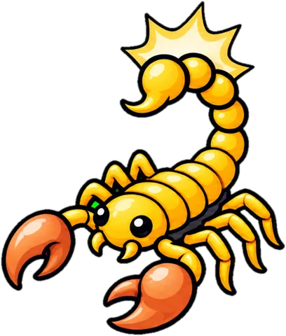

 ElectricBug
ElectricBugTap a stage to read its story.
A bright golden scorpion small enough to fit in a cupped hand, Sparksting carries a stinger that glows vivid yellow at its tip and hums like a live wire. Its eight legs pick through the leaf litter of Bug Thicket with meticulous precision, and it taps each twig with a foreleg before stepping on it - checking for stability. In Bug Thicket's layered canopy floor, Sparksting is at the very base of the food chain and knows it, staying under leaves and low cover and only raising its glowing stinger when cornered and frightened.
Field note: Sparksting taps every surface exactly twice before placing weight on it - trainers call this the Sparksting Double-Check.
Bug Thicket. Sparksting and its family are found in the Bug Thicket. See everyone who lives there.
Share a Bond Food that matches its types to become friends. Sparksting loves:
A Bond Food is not a trick. It joins your spirit with the Kimuro's spirit, and only when it chooses you.
Print the Kimuro adventure packs: mazes, cards, a board game and Bond Mark medals.
See the printable packs